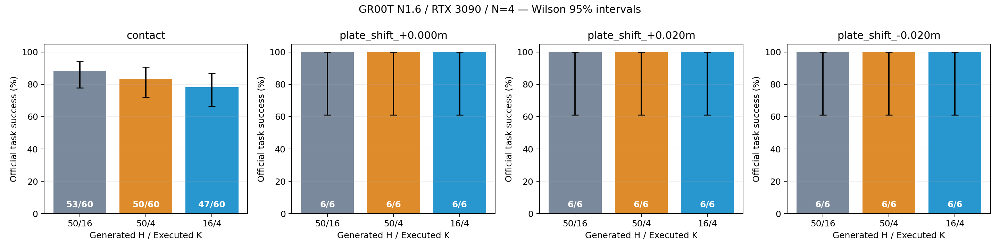

갱신 2026-11-17T16:10:19+09:00. 상태: completed. 완료 234회.
관측된 접촉 성공률 순위는 아래 표와 같습니다. 이 표만으로 일반적인 우열이나 동등성을 확정하지 않습니다.
| HK | success | rate_percent | p50_ms | amortized_ms |
|---|---|---|---|---|
| 50/16 | 53/60 | 88.3 | 65.5 | 4.34 |
| 50/4 | 50/60 | 83.3 | 65.2 | 16.4 |
| 16/4 | 47/60 | 78.3 | 64.7 | 16.3 |
앞선 Spatial·카메라·SmolVLA 216회 평가는 별도 보고서에 보존합니다. 이번 평가와 독립 표본 수를 늘리기 위해 합산하지 않습니다.
주 지표는 동일 초기 조건에서 공식 LIBERO 목표를 제한 control steps 안에 한 번 이상 달성하는 비율입니다. GR00T N1.6, BF16, flow N=4를 고정했습니다. H는 action latent 생성 길이, K는 실제 실행 후 재관측 간격입니다. 50/4 대 16/4가 H 효과, 50/16 대 50/4가 K 효과를 분리합니다.
접촉 실험은 결과를 보기 전에 고른 Goal 4개 작업과 LIBERO-10 1개 작업 × 초기 상태 12개 × H/K 3개 = 180회입니다. 스트레스 실험은 별도의 bowl-on-plate 작업에서 6개 초기 상태 × 접시 이동 0/−20/+20mm × H/K 3개 = 54회입니다. 각 묶음 내 모델 실행 순서를 섞었습니다. 노이즈는 base seed + initial state × 10000 + control step으로 결정하며 H별 native noise prefix를 공유합니다.
이 결과는 좁은 공차의 핀 삽입 성능이 아닙니다. LIBERO의 공식 On/In/Close 조건을 그대로 사용합니다. 예를 들어 cream-cheese-in-bowl 작업의 실제 목표는 On이며, 일부 In 조건은 가상 region의 containment입니다. 물리적 접촉을 모든 목표에서 따로 요구하거나 성공 기준을 임의로 강화하지 않았습니다. 목표 predicate는 각 원자료에 기록했습니다.
추론 중 simulator는 멈춥니다. 실제 비동기 제어, 관측 지연, PIM 장치 성능은 평가하지 않았습니다. H=16은 native H=50 모델을 재학습 없이 바꾼 조건입니다. Checkpoint는 공개 커뮤니티 all-four-LIBERO fine-tune이므로 학습 task와 겹칩니다.
| scenario | HK | success | rate_percent | sustained | p50_ms | p95_ms | amortized_ms | perturbations_applied |
|---|---|---|---|---|---|---|---|---|
| contact | 16/4 | 47/60 | 78.3 | 41/60 | 64.7 | 65.3 | 16.3 | 0 |
| contact | 50/4 | 50/60 | 83.3 | 42/60 | 65.2 | 65.7 | 16.4 | 0 |
| contact | 50/16 | 53/60 | 88.3 | 43/60 | 65.5 | 71.4 | 4.34 | 0 |
| plate_shift_+0.000m | 16/4 | 6/6 | 100 | 0/6 | 64.6 | 65.1 | 16.4 | 6 |
| plate_shift_+0.000m | 50/4 | 6/6 | 100 | 0/6 | 65 | 65.8 | 16.6 | 6 |
| plate_shift_+0.000m | 50/16 | 6/6 | 100 | 2/6 | 65.4 | 68.9 | 4.43 | 6 |
| plate_shift_+0.020m | 16/4 | 6/6 | 100 | 0/6 | 64.5 | 65.1 | 16.5 | 6 |
| plate_shift_+0.020m | 50/4 | 6/6 | 100 | 0/6 | 64.9 | 66.1 | 16.5 | 6 |
| plate_shift_+0.020m | 50/16 | 6/6 | 100 | 1/6 | 65.2 | 70.6 | 4.4 | 6 |
| plate_shift_-0.020m | 16/4 | 6/6 | 100 | 2/6 | 64.5 | 65.1 | 16.4 | 6 |
| plate_shift_-0.020m | 50/4 | 6/6 | 100 | 2/6 | 65 | 65.5 | 16.7 | 6 |
| plate_shift_-0.020m | 50/16 | 6/6 | 100 | 3/6 | 65.2 | 68 | 4.43 | 6 |
sustained는 최초 성공 직후 10 control steps(0.5초) 동안 위치·회전 명령을 0으로, gripper 명령을 직전 값으로 유지할 때 목표가 계속 참인지입니다. 정책을 더 실행하거나 강제로 놓게 하지 않습니다. 이는 보조 안정성 검사이며 자유로운 release 성공률이 아닙니다. amortized_ms는 성공 여부와 관계없이 실제 정책 control action당 추론 총비용입니다. 보조 10-step 검사는 분모에 포함하지 않습니다.
delta_pp > 0이면 왼쪽 설정의 성공률이 높습니다. wins/losses는 같은 초기 조건에서 한쪽만 성공한 횟수입니다. 95% bootstrap 구간은 지정된 작업 안에서 초기 상태를 재표집한 구간으로, 다른 작업에 대한 일반화 구간은 아닙니다. 둘 다 전부 성공해서 bootstrap 구간이 0인 경우에도 동등성이 입증되지는 않습니다. 주 비교 두 개에는 Holm 보정을 적용합니다. 그 외 비교는 탐색 결과이며 다중 비교를 보정하지 않았습니다.
| scenario | comparison | metric | pairs | wins | losses | ties | delta_pp | bootstrap_ci95_pp | exact_mcnemar_p | holm_p_primary_two |
|---|---|---|---|---|---|---|---|---|---|---|
| contact | 16/4 - 50/16 | success | 60 | 6 | 12 | 42 | -10 | [-23.333333333333332, 3.3333333333333326] | 0.238 | 0.476 |
| contact | 16/4 - 50/16 | sustained_success | 60 | 8 | 10 | 42 | -3.33 | [-16.666666666666664, 10.0] | 0.815 | |
| contact | 16/4 - 50/4 | success | 60 | 6 | 9 | 45 | -5 | [-16.666666666666668, 6.666666666666668] | 0.607 | 0.607 |
| contact | 16/4 - 50/4 | sustained_success | 60 | 9 | 10 | 41 | -1.67 | [-15.000000000000002, 11.666666666666666] | 1 | |
| contact | 50/4 - 50/16 | success | 60 | 4 | 7 | 49 | -5 | [-15.000000000000002, 5.000000000000002] | 0.549 | |
| contact | 50/4 - 50/16 | sustained_success | 60 | 8 | 9 | 43 | -1.67 | [-15.0, 11.666666666666666] | 1 | |
| plate_shift_+0.000m | 16/4 - 50/16 | success | 6 | 0 | 0 | 6 | 0 | [0.0, 0.0] | 1 | |
| plate_shift_+0.000m | 16/4 - 50/16 | sustained_success | 6 | 0 | 2 | 4 | -33.3 | [-66.66666666666666, 0.0] | 0.5 | |
| plate_shift_+0.000m | 16/4 - 50/4 | success | 6 | 0 | 0 | 6 | 0 | [0.0, 0.0] | 1 | |
| plate_shift_+0.000m | 16/4 - 50/4 | sustained_success | 6 | 0 | 0 | 6 | 0 | [0.0, 0.0] | 1 | |
| plate_shift_+0.000m | 50/4 - 50/16 | success | 6 | 0 | 0 | 6 | 0 | [0.0, 0.0] | 1 | |
| plate_shift_+0.000m | 50/4 - 50/16 | sustained_success | 6 | 0 | 2 | 4 | -33.3 | [-66.66666666666666, 0.0] | 0.5 | |
| plate_shift_+0.020m | 16/4 - 50/16 | success | 6 | 0 | 0 | 6 | 0 | [0.0, 0.0] | 1 | |
| plate_shift_+0.020m | 16/4 - 50/16 | sustained_success | 6 | 0 | 1 | 5 | -16.7 | [-50.0, 0.0] | 1 | |
| plate_shift_+0.020m | 16/4 - 50/4 | success | 6 | 0 | 0 | 6 | 0 | [0.0, 0.0] | 1 | |
| plate_shift_+0.020m | 16/4 - 50/4 | sustained_success | 6 | 0 | 0 | 6 | 0 | [0.0, 0.0] | 1 | |
| plate_shift_+0.020m | 50/4 - 50/16 | success | 6 | 0 | 0 | 6 | 0 | [0.0, 0.0] | 1 | |
| plate_shift_+0.020m | 50/4 - 50/16 | sustained_success | 6 | 0 | 1 | 5 | -16.7 | [-50.0, 0.0] | 1 | |
| plate_shift_-0.020m | 16/4 - 50/16 | success | 6 | 0 | 0 | 6 | 0 | [0.0, 0.0] | 1 | |
| plate_shift_-0.020m | 16/4 - 50/16 | sustained_success | 6 | 2 | 3 | 1 | -16.7 | [-83.33333333333334, 50.0] | 1 | |
| plate_shift_-0.020m | 16/4 - 50/4 | success | 6 | 0 | 0 | 6 | 0 | [0.0, 0.0] | 1 | |
| plate_shift_-0.020m | 16/4 - 50/4 | sustained_success | 6 | 1 | 1 | 4 | 0 | [-50.0, 50.0] | 1 | |
| plate_shift_-0.020m | 50/4 - 50/16 | success | 6 | 0 | 0 | 6 | 0 | [0.0, 0.0] | 1 | |
| plate_shift_-0.020m | 50/4 - 50/16 | sustained_success | 6 | 1 | 2 | 3 | -16.7 | [-66.66666666666666, 33.33333333333333] | 1 |
| scenario | task | H | K | successes | n |
|---|---|---|---|---|---|
| contact | KITCHEN_SCENE4_put_the_black_bowl_in_the_bottom_drawer_of_the_cabinet_and_close_it | 16 | 4 | 10 | 12 |
| contact | open_the_top_drawer_and_put_the_bowl_inside | 16 | 4 | 7 | 12 |
| contact | push_the_plate_to_the_front_of_the_stove | 16 | 4 | 9 | 12 |
| contact | put_the_cream_cheese_in_the_bowl | 16 | 4 | 12 | 12 |
| contact | put_the_wine_bottle_on_the_rack | 16 | 4 | 9 | 12 |
| contact | KITCHEN_SCENE4_put_the_black_bowl_in_the_bottom_drawer_of_the_cabinet_and_close_it | 50 | 4 | 8 | 12 |
| contact | open_the_top_drawer_and_put_the_bowl_inside | 50 | 4 | 10 | 12 |
| contact | push_the_plate_to_the_front_of_the_stove | 50 | 4 | 9 | 12 |
| contact | put_the_cream_cheese_in_the_bowl | 50 | 4 | 12 | 12 |
| contact | put_the_wine_bottle_on_the_rack | 50 | 4 | 11 | 12 |
| contact | KITCHEN_SCENE4_put_the_black_bowl_in_the_bottom_drawer_of_the_cabinet_and_close_it | 50 | 16 | 8 | 12 |
| contact | open_the_top_drawer_and_put_the_bowl_inside | 50 | 16 | 11 | 12 |
| contact | push_the_plate_to_the_front_of_the_stove | 50 | 16 | 11 | 12 |
| contact | put_the_cream_cheese_in_the_bowl | 50 | 16 | 11 | 12 |
| contact | put_the_wine_bottle_on_the_rack | 50 | 16 | 12 | 12 |
| plate_shift_+0.000m | put_the_bowl_on_the_plate | 16 | 4 | 6 | 6 |
| plate_shift_+0.000m | put_the_bowl_on_the_plate | 50 | 4 | 6 | 6 |
| plate_shift_+0.000m | put_the_bowl_on_the_plate | 50 | 16 | 6 | 6 |
| plate_shift_+0.020m | put_the_bowl_on_the_plate | 16 | 4 | 6 | 6 |
| plate_shift_+0.020m | put_the_bowl_on_the_plate | 50 | 4 | 6 | 6 |
| plate_shift_+0.020m | put_the_bowl_on_the_plate | 50 | 16 | 6 | 6 |
| plate_shift_-0.020m | put_the_bowl_on_the_plate | 16 | 4 | 6 | 6 |
| plate_shift_-0.020m | put_the_bowl_on_the_plate | 50 | 4 | 6 | 6 |
| plate_shift_-0.020m | put_the_bowl_on_the_plate | 50 | 16 | 6 | 6 |
접시를 world X축으로 ±20mm 즉시 이동하는 합성 스트레스입니다. 실제 물리적 힘을 가한 실험이 아닙니다. 시작 후 41/45/49/53/57/61번째 action 직전에 한 번 적용하며, chunk 도중이어도 실행합니다. +0mm에도 같은 재관측·속도 초기화 처리를 합니다. 이벤트 직후 정책에 강제 관측하지 않고 각 K의 예정된 시점에만 관측합니다. 이미 성공해서 이벤트 전에 끝난 trial은 perturbations_applied에서 제외되지만 전체 성공률 분모에는 유지합니다.
16/4가 두 대조군보다 접촉 성공률이 높아야 '짧은 H/K가 더 정확하다'는 현재 가설을 지지합니다. 50/4와 16/4가 함께 좋아지면 먼저 K 효과를 고려해야 합니다. 정확도 이득이 없을 경우 정확도 우위를 PIM 동기로 주장할 수 없습니다. 정확도 유지와 지연·에너지 이득이라는 별도 가설에는 실제 장치 또는 검증된 비용 모델이 필요합니다.
집계 JSON · trial CSV · 전체 trial · 호출 시간 · 사전 설정 · 모델·코드 provenance
trial의 replay 경로는 summary.json의 source_directory를 기준으로 합니다. 원본 GIF는 results의 replays에 보관하며 이 스냅샷에 중복 복사하지 않습니다.
